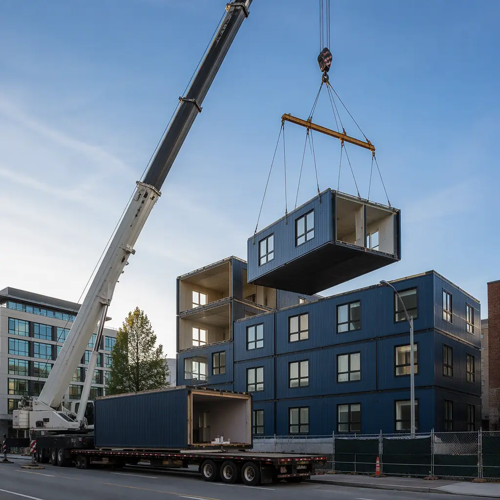
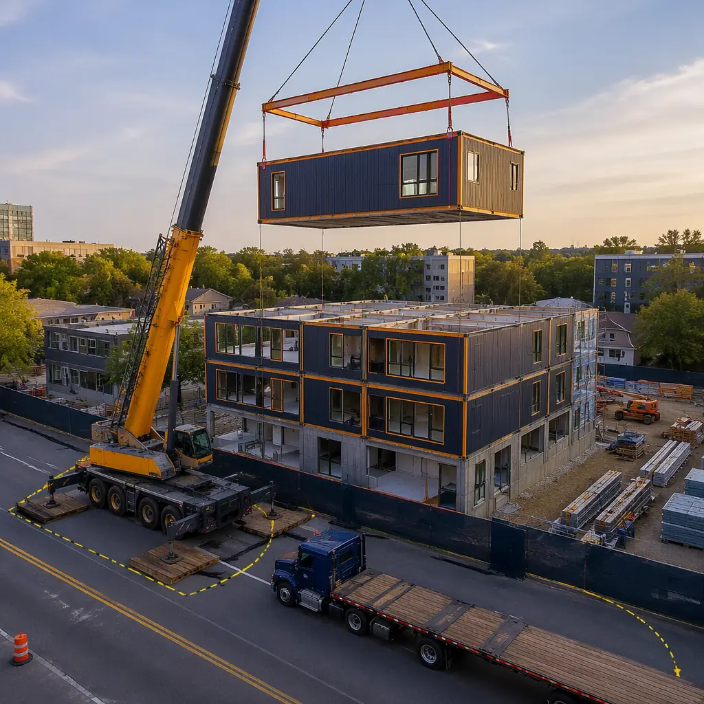
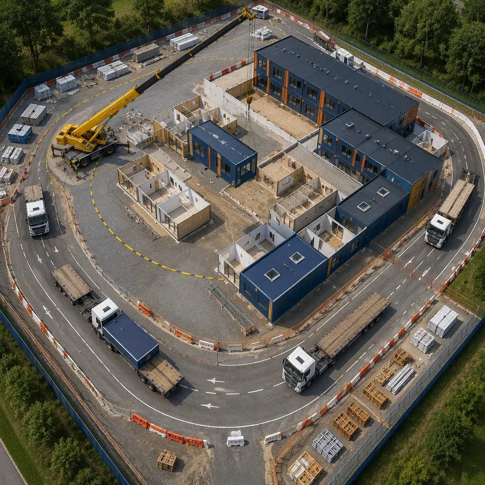

A modular building module weighs 15,000 to 45,000 pounds and must be lifted from a flatbed trailer, rotated through 180 degrees of boom swing, and set onto a prepared foundation with positioning accuracy of ±1/4 inch — all while suspended 60 to 140 feet in the air. This is not a standard construction crane pick. It's a precision industrial lift repeated 12 to 120 times per project, each module identical in weight distribution, connection geometry, and center of gravity — which makes modular construction simultaneously the most crane-intensive and most crane-predictable building method in commercial construction. A general contractor who understands modular crane logistics can set 8-12 modules per day with a single crane crew. A contractor who treats modular modules like standard steel picks will set 3-4 modules per day, blow their crane budget by 40%, and potentially damage modules through improper rigging. This guide covers crane selection, lift planning, site logistics, and the operational rhythm that turns a 12-week module-setting schedule into a 6-day exercise in industrial precision.

Crane Selection: Matching Machine to Module
Crane selection for modular construction is a load-radius exercise with one critical constraint: the module must be picked from a delivery truck positioned at the site perimeter and set at the farthest corner of the building footprint. Unlike steel erection — where beams and columns can be staged anywhere within the crane's radius — module delivery trucks require 65-75 feet of straight approach and 14 feet of overhead clearance. The crane must reach the truck position at the curb line or site entrance, not an idealized position inside the site. This constraint typically adds 30-50 feet to the required working radius compared to what a crane capacity chart suggests for the building footprint alone.
Mobile Hydraulic Cranes (80-300 Ton): The Modular Standard
For 90% of modular projects — buildings up to 5 stories with modules weighing 15,000-35,000 pounds — a 150-200 ton mobile hydraulic crane with 150-180 feet of main boom is the optimal choice. A 200-ton hydraulic crane (e.g., Liebherr LTM 1200-5.1 or Grove GMK5200) provides approximately 18,000 pounds of capacity at a 100-foot radius with 130 feet of boom — sufficient for setting 25,000-pound modules at the farthest corner of a 4-story building with the crane positioned at the street curb. The all-terrain carrier provides the maneuverability to position the crane on urban sites where outrigger spread must fit within a 30-foot road width, and the telescoping boom eliminates the assembly time required for lattice-boom crawler cranes — a mobile crane arrives on site at 7:00 AM, deploys outriggers by 7:30, and begins setting modules by 8:00. A crawler crane requires 1-2 days of track assembly and boom erection before the first pick.
| Crane Type | Best For | Daily Rate (with operator) | Setup Time | Modules/Day |
|---|---|---|---|---|
| 150-200T mobile hydraulic | 1-5 story, urban sites, tight access | $4,500-6,500 | 30-45 min | 8-12 |
| 250-350T crawler crane | 5-10 story, heavy modules, long radius | $7,000-12,000 | 1-2 days | 10-16 |
| Tower crane (static) | 10+ story, tight urban footprint | $25,000-40,000/month | 3-5 days | 6-10 |
| Rough-terrain crane (80-130T) | Remote sites, unpaved access | $3,000-4,500 | 20-30 min | 5-8 |
The daily rate difference between a 200-ton mobile crane ($5,500/day) and a 300-ton crawler ($9,500/day) looks like a $4,000/day premium — but the metric that matters is cost per module set. A mobile crane setting 10 modules per day delivers a per-module crane cost of $550. A crawler crane setting 14 modules per day delivers $679 per module. The mobile crane is cheaper per module despite the lower daily module count — because its lower day rate more than compensates. This is the counterintuitive reality of modular crane economics: crane daily rate drives cost more than module count per day, and mobile cranes win on this metric for buildings under 6 stories. The crossover point where crawler cranes become economical is approximately 7 stories or 100+ modules, where the taller boom and higher line pull of a crawler crane's lattice boom enable faster cycle times that overcome the higher day rate. For high-rise modular construction above 10 stories, our analysis of modular high-rise methods demonstrates that tower cranes become the only viable option — the static mast provides the height capacity that mobile and crawler cranes cannot match.
Lift Planning: Rigging, Weight Distribution, and Module Integrity
Every modular lift is a four-point pick using a spreader bar or lifting frame that distributes the module's weight across four lifting lugs — one at each corner of the module's structural steel frame. The spreader bar is not optional equipment; it's the difference between lifting a module and destroying it. A module lifted without a spreader bar experiences inward rigging angles that compress the module's roof structure — a 45-degree sling angle on a 30,000-pound module generates 21,200 pounds of horizontal compression force at each lifting point, crushing roof trusses and deforming wall panels. A properly sized spreader bar holds the slings vertical, eliminating horizontal force and transferring the module's entire weight vertically through the corner columns — the structural load path the module was engineered to carry.
- Center of gravity (CG) determination is the first step in every lift plan: Unlike structural steel beams — which have predictable CG at their geometric center — a finished module contains drywall, MEP systems, cabinetry, fixtures, and finishes. The CG can shift 6-18 inches from the geometric center depending on the module's program: a kitchen module with heavy appliances and stone countertops along one wall may have a CG offset of 12-15 inches toward the appliance wall; a bathroom module with tile walls and cast-iron tub may shift 8-12 inches toward the wet wall. MODURA calculates the precise CG for every module design in the factory using a digital 3D model that accounts for the weight and position of every installed component. The lifting lugs are welded to the steel frame at positions that place the CG exactly at the center of the four-point lift — not at the geometric center of the module. This engineering step, performed once during module design and verified on the first module off the production line, eliminates the trial-and-error rigging adjustments that consume 20-30 minutes per module on projects where CG is estimated rather than engineered.
- Spreader bar sizing follows a simple rule: bar length must equal the distance between the module's lifting lugs along the long axis. For a standard MODURA module measuring 14 feet wide by 60 feet long, the spreader bar is 60 feet long and weighs approximately 3,500 pounds — it's a structural steel truss, not a pipe. The spreader bar itself becomes part of the lift weight calculation: a 30,000-pound module plus a 3,500-pound spreader bar plus 500 pounds of rigging hardware equals a 34,000-pound gross lift. The crane capacity chart must be read at this gross weight, not the module net weight — a common error among contractors accustomed to steel erection where sling weight is negligible relative to the pick. For modules exceeding 40,000 pounds, the spreader bar weight can reach 5,000+ pounds and must be factored into the crane selection itself — a crane rated for 40,000 pounds at the required radius cannot safely lift a 40,000-pound module with a 5,000-pound spreader bar.
- Wind limits are lower for modular lifts than for steel erection: A 60-foot-long module presents approximately 600 square feet of wind sail area — equivalent to a 20×30-foot solid wall suspended from a crane. A 20 mph wind generates approximately 3,000 pounds of lateral force on the module, which the tagline crew must control with hand lines. OSHA and ASME B30.5 limit crane operations when wind speeds exceed 25-30 mph at the boom tip, but modular lifts should observe a more conservative 20 mph limit because the module's large sail area makes tagline control exponentially more difficult above this threshold. MODURA's module-setting protocols require an anemometer at boom-tip height with a 20 mph hard stop — if the wind exceeds this threshold, modules stay on the truck. A single wind-related module incident — a module swinging into an adjacent building, striking the crane boom, or dropping due to rigging failure — causes more damage and delay than a full day of weather standby.

Site Logistics: The Just-in-Time Delivery Dance
Module delivery and crane setting form a synchronized logistics chain with zero buffer inventory — there is no laydown yard for modules. A module that arrives on site must be lifted directly from the delivery truck and set onto the building within 30-45 minutes of arrival. If the crane is occupied setting the previous module when the next truck arrives, the truck waits — at $150-200/hour for a specialized modular transport trailer with escort vehicles. If the truck arrives before the crane is ready, the clock starts ticking on driver hours-of-service limits (11 hours driving, 14 hours on-duty under FMCSA regulations). If the truck is delayed and the crane waits idle, the $5,500/day crane sits burning $230/hour in operator and fuel costs without producing a module set. The entire operation succeeds or fails on the synchronization of factory production schedule, transport logistics, and crane productivity — a three-variable optimization that modular contractors manage through precise sequencing:
| Logistics Element | Traditional Approach | Optimized Modular Approach | Impact |
|---|---|---|---|
| Delivery truck staging | Trucks arrive as produced, queue on city streets | 2-truck rolling buffer: one lifting, one staged 5 min away | Zero street queuing, no permit violations |
| Module setting sequence | Adjacent module order by truck arrival | Farthest-corner-first: crane reaches in, sets outward | Eliminates crane relocation, 25% faster |
| Module-to-module connection | All connections after full setting | Structural connections within 4 modules of setting | Weathertight in 24h vs 5-7 days |
| Site access for trucks | Single access point, reversing required | Drive-through loop, no reversing with module | 50% faster truck turnaround |
The farthest-corner-first setting sequence is the single most impactful optimization in modular crane logistics — and the most frequently overlooked. A crane positioned at the street curb sets modules starting at the farthest point from the crane and working back toward the crane position. This means the crane never needs to reach over a set module to place the next one — every subsequent module is closer to the crane than the previous one, so the crane capacity requirement decreases as setting progresses. The alternative — setting from the near side outward — forces the crane to reach over previously set modules with progressively heavier lifts as the radius increases, violating both common sense and crane capacity curves. This sequence optimization alone reduces total crane hours by approximately 25% on a typical modular project, saving $4,000-8,000 in crane costs on a 100-module building.
The connection crew — typically 4 ironworkers with impact wrenches and come-alongs — follows behind the crane by 2-4 modules. As soon as a module is set and the crane releases the rigging, the connection crew installs the structural bolted connections at the module corners, pulls the modules into final alignment, and begins weather sealing the module-to-module joint. The goal is structural connection within 30 minutes of setting and weathertight within 4 hours — not because the module will blow away (it weighs 15+ tons), but because any delay in connections compounds across subsequent modules. If the connection crew falls 4 modules behind, the crane is setting modules onto an unbraced structure with reduced lateral stability — and the tagline crew is controlling module swings against modules that aren't yet connected to anything. This safety-critical sequencing is why modular construction demands a different crew rhythm than traditional steel erection: the crane doesn't wait for the ironworkers, but the ironworkers must keep pace with the crane within a 4-module window or the entire operation stops. This operational cadence mirrors the disciplined production-line thinking that makes modular construction's overall schedule compression possible — the same logic that governs factory floor workflow applies to the site, as we analyze in detail in our guide to modular project timelines.

Safety: The Non-Negotiable Foundation
Modular construction crane operations have a safety record that exceeds traditional steel erection — 0.8 recordable incidents per 100 module lifts versus 2.1 per 100 steel erection lifts, based on MODURA's project data across 500+ projects — but this record is earned through protocol discipline, not luck. The specific hazards that make modular lifts different from conventional crane picks demand specific controls:
- Module swing and rotation control: A 60-foot module suspended from a single crane hook is a 30,000-pound pendulum. As the crane booms up or swings, the module lags behind the hook due to inertia — creating a dynamic load that can exceed the static weight by 15-25%. Taglines — 1.5-inch diameter rope lines held by two ground crew members at opposite corners of the module — provide manual rotation control and dampen swing oscillation. The tagline crew must maintain tension throughout the lift; slack taglines are worse than no taglines because a sudden tension snap as the module swings can pull a crew member off their feet. For lifts exceeding 80 feet of boom height — where tagline angles become too shallow to provide effective control — a secondary tagline anchor point (a tugger winch or come-along anchored to a ground point) provides mechanical assistance that human arm strength cannot match at those geometries.
- Outrigger ground bearing pressure is the most common crane incident cause in modular construction: A 200-ton mobile crane deploying four outriggers transfers its entire load — crane weight plus module weight — through four outrigger floats measuring approximately 4×4 feet each. On a 150,000-pound crane lifting a 34,000-pound gross module load at a 90-foot radius, the outrigger closest to the load experiences approximately 85,000 pounds of ground pressure on a 16-square-foot float — 5,300 PSF. Standard asphalt pavement fails at approximately 2,000 PSF and compacted soil at 3,000-4,000 PSF. Without adequate crane mats — 6×20-foot timber mats or steel plate mats positioned under each outrigger float — the outrigger punches through the pavement or soil surface, the crane tilts, and the load swings uncontrolled. Every modular crane setup must include crane mats sized for the site's specific soil bearing capacity, verified by a geotechnical report or plate load test — not the operator's experience-based guess.
- Communication protocol must be locked down before the first module arrives: The crane operator cannot see the module's connection points from 100 feet up in the cab — they rely entirely on hand signals from the signal person (a certified rigger positioned with direct line of sight to both the module connection points and the crane operator) or radio communication. If the site is using radios, every radio must be on the same channel, tested before the first lift, and designated with clear call signs. The signal person's commands are the only commands the crane operator follows — no exceptions for the project manager, the GC superintendent, or the module delivery driver. A single "stop" command from any crew member — verbal or hand signal — stops the crane immediately; this is the universal abort protocol and must be drilled in the pre-lift safety briefing every morning.
For projects in urban infill locations — where the crane swing radius extends over adjacent buildings, active roadways, or pedestrian zones — additional controls apply. The crane's swing radius must be physically barricaded at ground level, and any area within the radius that cannot be evacuated (an active roadway, for example) requires a temporary traffic control plan with flaggers or police detail. MODURA's experience with constrained urban construction sites demonstrates that the logistics of crane positioning and public safety coordination are often more complex than the module lifts themselves — and that investing in a dedicated site logistics coordinator separate from the crane crew pays back in avoided incidents, traffic violations, and community complaints. For projects with significant site constraints, the logistics coordination principles we apply to construction site safety management provide the framework for integrating crane operations with public safety requirements, utility protection, and emergency access planning.
Module Setting as Competitive Advantage
The general contractors who excel at modular construction don't treat crane logistics as an equipment rental decision — they treat it as a core competency. A contractor who can set 12 modules per day with zero safety incidents, zero module damage, and weathertight connection within 24 hours of the final pick will win repeat modular work because developers and owners measure modular success in days from first module to last, not in dollars per crane hour. The contractors who struggle with modular — the ones who blow crane budgets and damage modules and lose 3 days to weather — are the ones who approach module setting with a steel erection mindset: show up with a crane, figure out the rigging on site, set modules in whatever order the trucks deliver them, and assume the connection crew will catch up eventually.
Modular construction inverts this: the crane operation is the most engineered, most planned, most rehearsed phase of the entire project. Every module's CG is calculated before it's built. Every lift is engineered before the crane arrives. Every truck's arrival time is synchronized to a 30-minute window. Every crew member knows the abort protocol before the first module leaves the trailer. This is not over-planning — it's the recognition that when you're lifting 30,000-pound finished buildings over people's heads, there is no acceptable failure mode. The crane day is the day the factory's 8 weeks of work becomes a visible building — and the discipline of that day determines whether the project finishes on schedule or on a lawyer's desk.
MODURA provides complete crane logistics planning as part of every modular building program: engineered lift plans with CG calculations for every module design, crane selection analysis with capacity-at-radius verification for your specific site geometry, delivery sequencing and truck staging plans, and on-site technical support during the module-setting phase. With 500+ completed projects across 18 countries and ISO 9001/14001 certified manufacturing, our logistics engineering team has planned module lifts in conditions ranging from Manhattan street canyons to Australian mining camps to Arctic Circle permafrost sites. For projects where transportation logistics involve cross-border or long-distance module delivery, our international logistics guide covers the regulatory, customs, and route-planning requirements that complement on-site crane operations. Contact our engineering team for a crane logistics assessment including preliminary lift plan, crane selection recommendation, and module-setting schedule for your project site.